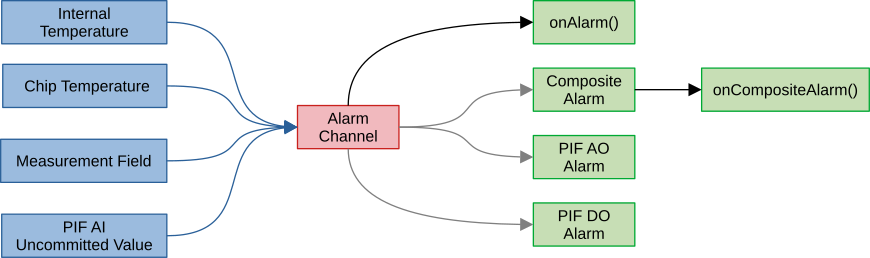
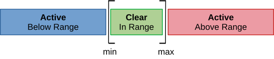
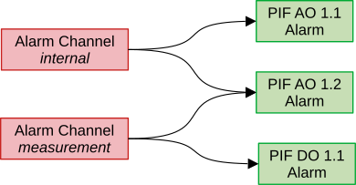

|
Thermal Camera SDK 11.4.10
SDK for Optris Thermal Cameras
|
|
Thermal Camera SDK 11.4.10
SDK for Optris Thermal Cameras
|
The SDK realizes alarms with the help of alarm channels. Each channel continuously monitors whether a given numeric input falls within a set range. Based on this assessment the current state of the channel is determined. If the value, for example, falls outside of the said range the channel transitions to an active alarm state. The resulting state can then be routed to various other components of the SDK.
The diagram below outlines the flow of data through an alarm channel:

Each alarm channel can only have a single input at a time (blue arrows). These inputs provide the numerical values that are checked by the channel:
IRImager::getTemperatureBox() method.IRImager::getTemperatureChip() method.The values for the internal and chip temperatures are always available once the device connection is established because they are derived from built-in sensors. Things are, however, different for the other two inputs:
Orphaned.Unknown until it receives the first uncommitted value. If the mode of the associated PIF analog input channel is changed, the SDK will mark the associated alarm channel as Orphaned.Orphaned the SDK first updates the outputs and then removes the channel automatically.The update rate of an alarm channel is tied to the frequency with which the inputs provide updates. Internal temperatures, chip temperatures and uncommitted values are updated at the full device framerate listed in the supported cameras section. The updates for measurement fields are influenced by two additional configuration options:
The status of an alarm channel is represented by its state. The available states are defined by the enum AlarmState that has the following values:
ActivePreActiveClearOrphanedDisabledUnknownUnknown is the initial state of every newly created alarm channel. It remains in this state until it gets its first update from its input. Every time a new input value is received it reevaluates its current state in the following sequence:
Disabled, if the overall alarm channel was disabled. Skip all other steps.[preAlarm.min, preAlarm.max] set the state to Clear and if not to PreAlarm.[alarm.min, alarm.max] escalate the state to Active.In addition to the state, the SDK determines whether the considered value is below, above or in the (pre-)alarm ranges. For the state PreAlarm this refers to the pre-alarm range and for the state Active to the alarm range. The following figure visualizes the possible AlarmStates and AlarmRangeRelations for a disabled pre-alarm:

The SDK notices, if an associated input of an alarm channel was removed (measurement field or uncommitted value). In this case the corresponding alarm channel is marked as Orphaned.
Orphaned channel automatically.Each alarm channel can have an arbitrary number of outputs. Every time its state changes these outputs receive a status update comprised of the following data points:
The available outputs fall into three different categories:
By default registered IRImagerClients are updated about individual alarm state changes via the onAlarm() callback. Their new AlarmChannelStatus is contained in the AlarmEvent that this callback provides.
AlarmEvent object is only valid during the callback. If you wish to use it outside the callback, make an explicit copy via an assignment (C++) or use its clone() method (all other languages).The state of multiple alarm channels can be combined into a single composite alarm. The composite alarm has only two states: active or inactive. It is active, if at least one of the alarm channels it is comprised of is in the alarm state Active. It is inactive, if all its alarm channels are not Active or if it does not have any alarm channels.
Active states of its alarm channels. It is also inactive if no alarm channels are linked to it.Whenever the composite alarm state changes the callback onCompositeAlarm() of the IRImagerClient is triggered. The provided CompositeAlarmEvent holds the new CompositeAlarmStatus detailing its new state and the alarm channels that caused it.
onCompositeAlarm() fires on changes of the composite's aggregate active-member count and is evaluated asynchronously on the alarm dispatch thread. Simultaneous member transitions within the same frame are coalesced into a single event, and an equal-count membership swap (one channel clears while another activates) updates the active-member set without emitting an event. To obtain the exact live membership at any time, poll getAlarmChannelStatuses() rather than reconstructing it from the event stream.Whether an alarm channel is part of the composite is determined by its configuration. If the flag partOfComposite in the AlarmChannelConfig or the value in the <part_of_composite> tags in the configuration file is true the alarm channel will contribute to the composite alarm.
The status of an alarm channel can be routed to multiple PIF analog and digital output channels. Likewise, these PIF channels can receive the status of multiple alarm channels.
Alarm mode before they process any linked alarm channels.Unlike measurement fields the PIF and alarm channels do not need to be configured in a specific order. The SDK takes care that the alarm channel status is properly routed.

Similar to the composite alarm the PIF channels only consider whether their associated alarm channels are in their Active state. If at least one alarm is Active they output the configured level for active. If no alarm channel is Active or no alarm channel is associated they output the level for inactive.
Active states of their associated alarm channels. If no alarm is linked to them they output the signal for inactive.Please refer to the documentation of the PIF Alarm mode for more details on the configuration and the resulting output levels.
There are two ways to create alarm channels:
IRImager interface at runtimeIn both cases the same options are available. The settings exposed in the configuration file are mirrored in the AlarmChannelConfig class that can be used to create alarm channels at runtime. They fall roughly into four different categories:
The available inputs are represented by the enum AlarmInput. In the case of InternalTemperature and ChipTemperature no further particulars are required. For the other inputs, however, more details are needed:
MeasurementField
You need to specify the field index in order to identify the measurement field that should be associated with the alarm channel. The index can be acquired at runtime via the getIndex() method of the MeasurementField handle of the desired field. In the configuration file the index is given by the order in which the fields are defined. Starting with 0 for the first field defined.
Additionally, you have to determine which statistical data point should be used. Currently available are the mean, median, minimum and maximum temperatures in degree Celsius.
UncommittedValueThe pre-alarm can selectively be enabled and has a different range than the primary alarm. The primary alarm range is always checked. This check can only be suppressed by disabling the entire channel.
min and max for the (pre-)alarm ranges are included in that range: [min, max].The output to the SDK clients via the IRImagerClient::onAlarm() callback is always active and does not need any configuration.
The flag partOfComposite lets you decide whether to include this alarm channel in the composite alarm.
You can add a PifIndex that identifies a PIF channel by its device and pin indices to the containers pifAoIndices and pifDoIndices to route the status of this alarm channel to the desired analog and digital outputs.
To create an alarm channel at runtime you first have to create an object of the AlarmChannelConfig class, then set its options as desired and finally pass it to the IRImager::addAlarmChannel() method.
C++
C#
Python
On success the method returns a pointer/reference to an AlarmChannel object that can be subsequently be used to address the channel.
IRImager::saveConfig() save them permanently.Alarm channels specified in the configuration file are automatically added when connecting to a device. You can access their handles through the IRImager::getAlarmChannels() method. They are ordered in the container in the way they are listed in the configuration file.
When creating a new alarm channel the SDK assigns it a unique ID. This ID can be accessed with the AlarmChannel::getId() method and stays consistent during the lifetime of the channel. Upon removal the ID is released and may be reused later on.
The IRImager interface exposes the updateAlarmChannel() method that allows you to update the channel configuration. But first it is recommended to retrieve the current channel configuration via the getConfig() method of the corresponding AlarmChannel handle. After adjusting its values as desired it can be applied by calling the above mentioned update method.
C++
C#
Python
IRImager::saveConfig() to do so.Active alarm channels can be removed with the IRImager::removeAlarmChannel() method that expects the AlarmChannel handle of the alarm channel to removed as argument.
C++
C#
Python
-1. This enables clients to determine whether an alarm handle still refers to an active alarm channel by checking alarm->getId() < 0.alarm handle is referring to. It just removes all internal references to them. Let the alarm handle fall out of scope to trigger their complete release.Orphaned alarm channels clients should either monitor the IRImagerClient::onAlarm() callback for channels with an Orphaned state or periodically check the alarm handles for ones that return an ID that is less than 0.